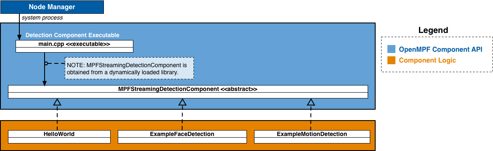

NOTICE: This software (or technical data) was produced for the U.S. Government under contract, and is subject to the Rights in Data-General Clause 52.227-14, Alt. IV (DEC 2007). Copyright 2017 The MITRE Corporation. All Rights Reserved.
API Overview
In OpenMPF, a component is a plugin that receives jobs (containing media), processes that media, and returns results.
The OpenMPF Streaming Component API currently supports the development of detection components, which are used detect objects in live RTSP or HTTP video streams.
Using this API, detection components can be built to provide:
- Detection (Localizing an object)
- Tracking (Localizing an object across multiple frames)
- Classification (Detecting the type of object and optionally localizing that object)
Each frame of the video is processed as it is read from the stream. After processing enough frames to form a segment (for example, 100 frames), the component starts starts processing the next segment. Like with batch processing, each segment read from the stream is processed independently of the rest. No detection or track information is carried over between segments. Tracks are not merged across segments.
How Components Integrate into OpenMPF
Components are integrated into OpenMPF through the use of OpenMPF's Component Executable. Developers create component libraries that encapsulate the component detection logic. Each instance of the Component Executable loads one of these libraries and uses it to service job requests sent by the OpenMPF Workflow Manager (WFM).
The Component Executable:
- Receives and parses job requests from the WFM
- Invokes functions on the component library to obtain detection results
- Populates and sends the respective responses to the WFM
The basic psuedocode for the Component Executable is as follows:
while (has_next_frame) {
if (is_new_segment) {
component->BeginSegment(video_segment_info)
}
activity_found = component->ProcessFrame(frame, frame_number) // Component logic does the work here
if (activity_found && !already_sent_new_activity_alert_for_this_segment) {
SendActivityAlert(frame_number)
}
if (is_end_of_segment) {
streaming_video_tracks = component->EndSegment()
SendSummaryReport(frame_number, component->getDetectionType(), streaming_video_tracks)
}
}
Each instance of a Component Executable runs as a separate process. Generally, each process will execute a different detection algorithm that corresponds to a single stage in a detection pipeline. Each instance is started by the Node Manager as needed in order to execute a streaming video job. The Node Manager will monitor the process status and eventually stop it.
The Component Executable invokes functions on the Component Logic to get detection objects, and subsequently generates new track alerts and segment summary reports based on the output. These alerts and reports are sent to the WFM.
A component developer implements a detection component by extending MPFStreamingDetectionComponent.
Getting Started
The quickest way to get started with the C++ Streaming Component API is to first read the OpenMPF Component API Overview and then review the source of an example OpenMPF C++ detection component that supports stream processing.
Detection components are implemented by:
- Extending
MPFStreamingDetectionComponent. - Building the component into a shared object library. (See HelloWorldComponent CMakeLists.txt).
- Packaging the component into an OpenMPF-compliant .tar.gz file. (See Component Packaging).
- Registering the component with OpenMPF. (See Packaging and Registering a Component).
API Specification
The figure below presents a high-level component diagram of the C++ Streaming Component API:

The API consists of a Detection Component Interface and related input and output structures.
Detection Component Interface
MPFStreamingDetectionComponent- Abstract class that should be extended by all OpenMPF detection components.
Inputs
The following data structures contain details about a specific job, and a video segment (work unit) associated with that job:
Outputs
The following data structures define the results of a component's processing:
Component Factory Functions
Every detection component must include the following macro in its implementation:
EXPORT_MPF_STREAMING_COMPONENT(TYPENAME);
This creator macro takes the TYPENAME of the detection component (for example, “StreamingHelloWorld”). This macro creates the factory function that the OpenMPF Component Executable will call in order to instantiate the detection component. The creation function is called once, to obtain an instance of the component, after the component library has been loaded into memory.
This macro also creates the factory function that the Component Executable will use to delete that instance of the detection component.
This macro must be used outside of a class declaration, preferably at the bottom or top of a component header file.
Example:
// Note: Do not put the TypeName/Class Name in quotes
EXPORT_MPF_STREAMING_COMPONENT(StreamingHelloWorld);
Detection Component Interface
The MPFStreamingDetectionComponent class is the abstract class utilized by all OpenMPF detection components. This class provides functions for developers to integrate detection logic into OpenMPF.
MPFStreamingDetectionComponent()
MPFStreamingDetectionComponent(const MPFStreamingVideoJob &job) { };
GetDetectionType()
Returns the type of object detected by the component.
- Function Definition:
string GetDetectionType() -
Parameters: None
-
Returns: (string) The type of object detected by the component. Should be in all CAPS. Examples include:
FACE,MOTION,PERSON,CLASS(for object classification), orTEXT. - Example:
string SampleComponent::GetDetectionType() {
return "FACE";
}
BeginSegment()
void BeginSegment(const VideoSegmentInfo &segment_info) { };
ProcessFrame()
bool ProcessFrame(const cv::Mat &frame, int frame_number) = 0;
EndSegment()
std::vector<MPFVideoTrack> EndSegment() = 0;